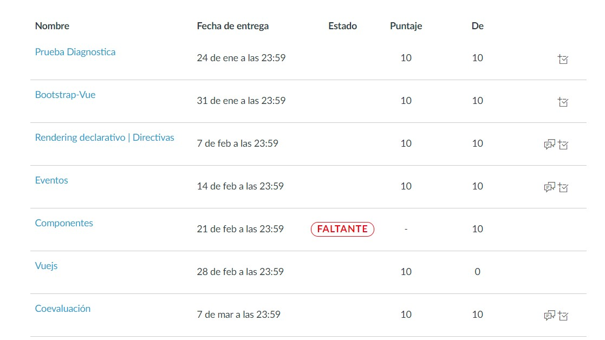

UNIDAD I
DESARROLLO FRONTEND CON LIBRERÍAS DEL LADO DEL CLIENTE
Cómputo dedicado a VUE JS, este cómputo se introdujeron muchos nuevos conceptos a mi saquito de conocimientos.
Aprendimos a cómo usar la mayoría de las directivas de Vue, como v-bind, v-for, v-if, v-show y v-on. Que por cierto al inicio del cómputo no tenía ni idea de lo que era una directiva. También aprendimos sobre propiedades computadas, a vincular el estilo a las propiedades de los componentes, vigilar el cambio de valores y definir métodos dentro de los componente.
Estuvo super interesante cuando aprendí sobre los componentes, no me podía creer que con definiendo unas etiquetas podía volver a reutilizar componentes.
EVIDENCIA DE ENTREGAS

**La tarea faltante fue una tarea colaborativa, fue entregada en el buzón por un compañero Repositorio de entrega